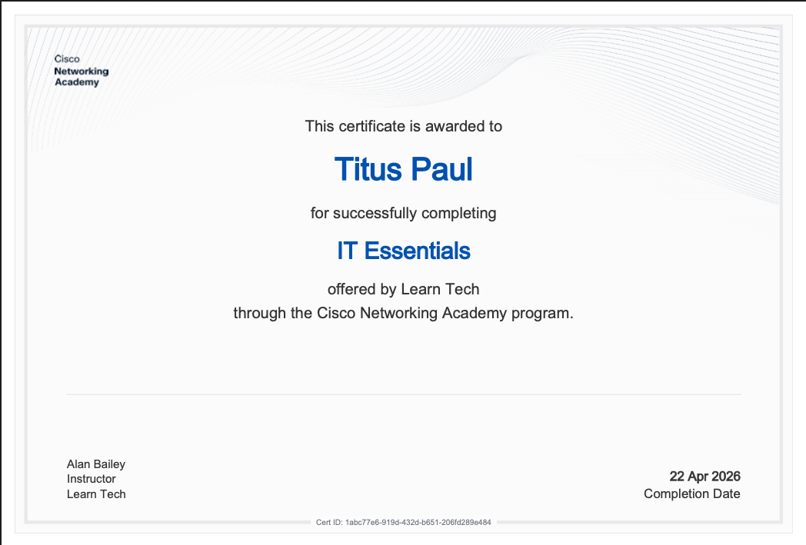
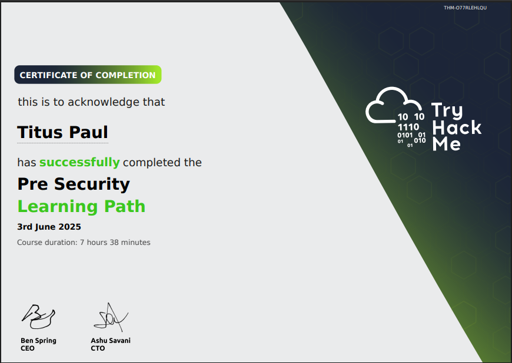

Built a clean and user-friendly MD5 hash cracker in Python.
Focus on usability + real-world cracking concepts.
Built a clean and user-friendly MD5 hash cracker in Python.
Focus on usability + real-world cracking concepts.
Configured firewall rules on Ubuntu for system security.
Demonstrates real defensive security practices.
Python-based port scanner using Nmap.
Shows enumeration techniques used in security.
Analysis of AI's impact on cybersecurity workflows.
Focus on cognitive load and blue team perspective.


